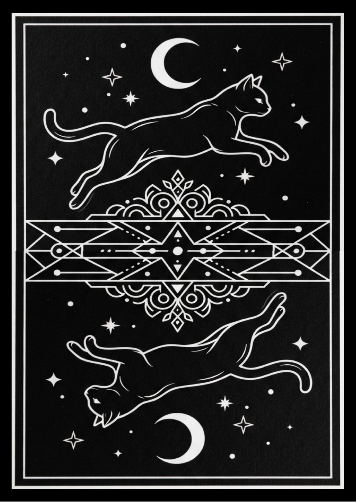

Your card

Choose a spread and take a moment with each card. Use the reading as a prompt for your own reflection.
Explore all 78 card meaningsYour card

78 cards · repeated draws allowed between readings
Bring the cards from your reading into your hands. A complete 78-card deck, created to invite a slower, more personal moment with every draw.


Loading local currency estimate…
Secure checkout is not connected yet. No payments will be taken from this page.
Currency conversions are estimates from live exchange rates. Your bank or payment provider may use a different rate.
Product artwork shown for preview. Final deck specifications and shipping details will be provided with the live checkout.